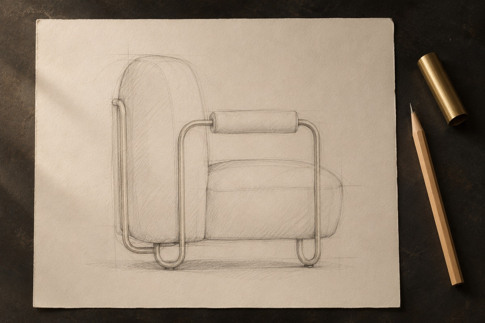

Stage 1 : Feasibility
The armchair reaches us as a sketch, an inspiration photo or a plan. Before any commitment, our design office assesses it: can this brass frame be made as drawn, and what will it demand of the workshop?
You know early on what is feasible, at what cost and within what timeframe.
- Who handles it
- The design office for the assessment, the administrative team for the estimate and quote.
- What comes out of it
- A clear answer and a quote.